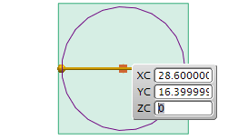
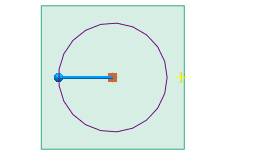
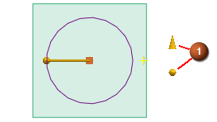
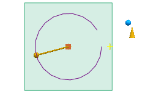
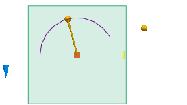

编辑圆弧和圆
-
选择圆弧。
将打开圆弧/圆(非关联)对话框并在圆周围显示屏显输入框。

-
按下 F3 键以关闭屏显输入框。
-
在圆弧/圆(非关联)对话框将打开，从通过点组的终点选项列表中，选择半径。
-
在大小组的半径输入框中，键入20并回车。
圆的大小将立即发生变化。

可以通过编辑圆的起始和终止角度来把圆更改为圆弧。
-
在限制组中，清除整圆复选框。
其它限制选项将出现在对话框中，并且起始和终止限制手柄
 出现在图形窗口中。
出现在图形窗口中。
-
在对话框中，在起始限制选项之后的角度输入框中，键入30并回车(或者沿逆时针方向拖动起始手柄，直到角度输入框中的值为30)。

-
在对话框中，在终止限制选项后的角度输入框中，键入180并回车(或者沿逆时针方向拖动终止手柄，直到角度输入框中的值为180)。
圆将变为起始于30度并终止于180度的圆弧。
